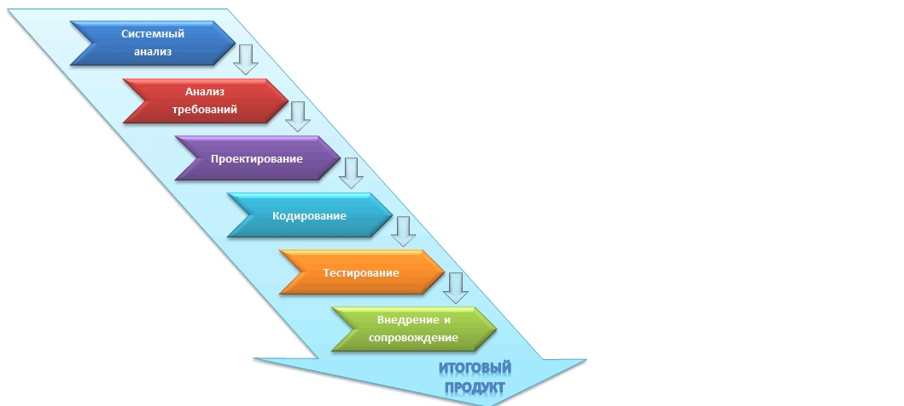

Каскадная стратегия (однократный проход, водопадная или классическая модель)
Подразумевает линейную последовательность выполнения стадий создания информационной системы . Другими словами, переход с одной стадии на следующую происходит только после того, как будет полностью завершена работа на текущей.
Данная модель применяется при разработке информационных систем, для которых в самом начале разработки можно достаточно точно и полно сформулировать все требования.
Достоинства модели
- на каждой стадии формируется законченный набор документации, программного и аппаратного обеспечения, отвечающий критериям полноты и согласованности;
- выполняемые в четкой последовательности стадии позволяют уверенно планировать сроки выполнения работ и соответствующие ресурсы (денежные, материальные и людские).
Недостатки модели
- реальный процесс разработки информационной системы редко полностью укладывается в такую жесткую схему. Особенно это относится к разработке нетиповых и новаторских систем;
- основана на точной формулировке исходных требований к информационной системе. Реально в начале проекта требования заказчика определены лишь частично;
- основной недостаток – результаты разработки доступны заказчику только в конце проекта. В случае неточного изложения требований или их изменения в течение длительного периода создания ИС заказчик получает систему, не удовлетворяющую его потребностям.
